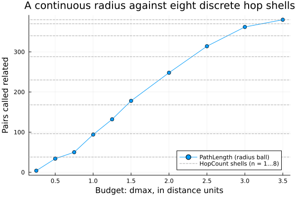
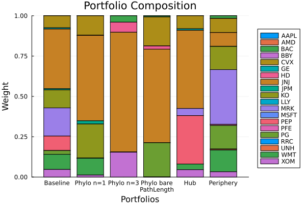

The source files can be found in examples/.
Phylogeny and centrality constraints
The constraints in Linear and group constraints act on names and hand-drawn groups. Phylogeny and centrality constraints act on the structure of the asset network instead — the graph of how assets co-move. Rather than telling the optimiser "tech ≤ 30%", you tell it "don't pile into a tightly-knit cluster" or "tilt toward (away from) the hubs of the correlation network". The groups are discovered from the data, not declared.
PortfolioOptimisers.jl builds the network with a NetworkEstimator (or a clustering estimator) and then exposes two families:
- Phylogeny constraints (
SemiDefinitePhylogenyEstimator,IntegerPhylogenyEstimator) via theplekeyword — limit joint exposure to network-linked assets. - Centrality constraints (
CentralityConstraintbuilt from aCentralityEstimator) via thectekeyword — bound the portfolio's average network centrality.
Reach for these when your diversification concern is structural rather than by label: you do not want a book that looks diversified by sector but is actually one big correlated bet, or you want to deliberately tilt toward stable hubs or peripheral diversifiers. They need no hand-built groups — the structure comes from the covariance. The semidefinite phylogeny and centrality forms are convex; the integer phylogeny form needs a MIP solver.
Both families are driven by one dial you have to set deliberately: how far apart two assets may sit in the network and still count as related. That is the sep field of a NetworkEstimator, covered in §2.1, and one of its settings quietly collapses the portfolio onto a single name — see the warning there.
using PortfolioOptimisers, CSV, TimeSeries, DataFrames, PrettyTables, Clarabel, StatsPlots, GraphRecipesresfmt = (v, i, j) -> begin return if j == 1 v else isa(v, AbstractFloat) ? "$(round(v*100, digits=3)) %" : v endend;1. ReturnsResult data
X = TimeArray(CSV.File(joinpath(@__DIR__, "..", "SP500.csv.gz")); timestamp = :Date)[(end - 252):end]rd = prices_to_returns(X)pr = prior(EmpiricalPrior(), rd)slv = Solver(; name = :clarabel, solver = Clarabel.Optimizer, settings = Dict("verbose" => false), check_sol = (; allow_local = true, allow_almost = true))res_base = optimise(MeanRisk(; obj = MinimumRisk(), opt = JuMPOptimiser(; pe = pr, slv = slv)))MeanRiskResult
jr ┼ JuMPOptimisationResult
│ pa ┼ ProcessedJuMPOptimiserAttributes
│ │ pr ┼ LowOrderPrior
│ │ │ X ┼ 252×20 Matrix{Float64}
│ │ │ o_X ┼ nothing
│ │ │ mu ┼ 20-element Vector{Float64}
│ │ │ sigma ┼ 20×20 Matrix{Float64}
│ │ │ chol ┼ nothing
│ │ │ w ┼ nothing
│ │ │ ens ┼ nothing
│ │ │ kld ┼ nothing
│ │ │ ow ┼ nothing
│ │ │ rr ┼ nothing
│ │ │ fpr ┼ nothing
│ │ │ Z ┴ nothing
│ │ wb ┼ WeightBounds
│ │ │ lb ┼ 20-element StepRangeLen{Float64, Base.TwicePrecision{Float64}, Base.TwicePrecision{Float64}, Int64}
│ │ │ ub ┴ 20-element StepRangeLen{Float64, Base.TwicePrecision{Float64}, Base.TwicePrecision{Float64}, Int64}
│ │ lt ┼ nothing
│ │ st ┼ nothing
│ │ lcsr ┼ nothing
│ │ ctr ┼ nothing
│ │ gcardr ┼ nothing
│ │ sgcardr ┼ nothing
│ │ smtx ┼ nothing
│ │ sgmtx ┼ nothing
│ │ slt ┼ nothing
│ │ sst ┼ nothing
│ │ sglt ┼ nothing
│ │ sgst ┼ nothing
│ │ tn ┼ nothing
│ │ fees ┼ nothing
│ │ plr ┼ nothing
│ │ ret ┼ ArithmeticReturn
│ │ │ settings ┼ JuMPReturnsSettings
│ │ │ │ scale ┼ Float64: 1.0
│ │ │ │ lb ┼ nothing
│ │ │ │ rte ┼ Bool: true
│ │ │ │ fee ┼ Bool: true
│ │ │ │ mic ┴ Bool: true
│ │ │ ucs ┼ nothing
│ │ │ mu ┴ 20-element Vector{Float64}
│ │ sca ┼ SumScalariser()
│ │ imsk ┴ nothing
│ retcode ┼ OptimisationSuccess
│ │ res ┴ Dict{Any, Any}: Dict{Any, Any}()
│ sol ┼ JuMPOptimisationSolution
│ │ w ┴ 20-element Vector{Float64}
│ model ┼ A JuMP Model
│ │ ├ solver: Clarabel
│ │ ├ objective_sense: MIN_SENSE
│ │ │ └ objective_function_type: QuadExpr
│ │ ├ num_variables: 21
│ │ ├ num_constraints: 4
│ │ │ ├ AffExpr in MOI.EqualTo{Float64}: 1
│ │ │ ├ Vector{AffExpr} in MOI.Nonnegatives: 1
│ │ │ ├ Vector{AffExpr} in MOI.Nonpositives: 1
│ │ │ └ Vector{AffExpr} in MOI.SecondOrderCone: 1
│ │ └ Names registered in the model
│ │ └ :G, :bgt, :cdev_soc_1, :dev_1, :k, :lw, :obj_expr, :ret, :ret_1, :ret_vec, :risk, :risk_vec, :sc, :so, :variance_flag, :variance_risk_1, :w, :w_lb, :w_ub
r ┼ Variance
│ settings ┼ RiskMeasureSettings
│ │ scale ┼ Float64: 1.0
│ │ ub ┼ nothing
│ │ rke ┴ Bool: true
│ sigma ┼ 20×20 Matrix{Float64}
│ chol ┼ nothing
│ rc ┼ nothing
│ alg ┴ SquaredSOCRiskExpr()
fb ┴ nothing
2. The asset network
A NetworkEstimator turns the covariance into a graph: assets are nodes, and edges link assets whose returns are connected after filtering out the noisy links (a minimum-spanning-tree or similar backbone). Both constraint families below read this graph. You do not have to build it by hand — the estimators take a NetworkEstimator() and construct it from the prior internally.
2.1 How far apart still counts as related
The graph only says which assets are directly linked. Every constraint below needs a second answer: how far apart two assets may sit and still count as related. That is the sep field of the NetworkEstimator, and it is the single dial controlling how much of the universe each constraint sees as one bet.
Two separations ship, and they measure the same structure in different units:
HopCountcounts edges, ignoring their lengths, with a budget ofnof them.HopCount(; n = 1)is the default and means "directly linked only".PathLengthadds up the distances along the shortest path, with a budgetdmaxin those same units.
The two are interchangeable — every consumer takes either — but their numbers are not comparable, because the budgets are in different units. Choose whichever unit you can reason about, then read the cardinality it produces rather than trusting the budget to feel tight.
n_assets = size(pr.X, 2)n_pairs = n_assets * (n_assets - 1)related_pairs(sep) = count(!iszero, phylogeny_matrix(NetworkEstimator(; sep = sep), pr).X)hop_budgets = 1:8dmax_budgets = [0.25, 0.5, 0.75, 1.0, 1.25, 1.5, 2.0, 2.5, 3.0, 3.5]hop_pairs = [related_pairs(HopCount(; n = n)) for n in hop_budgets]dmax_pairs = [related_pairs(PathLength(; dmax = d)) for d in dmax_budgets]ladder = DataFrame("Separation" => [["HopCount" for _ in hop_budgets]; ["PathLength" for _ in dmax_budgets]], "Budget" => [string.(hop_budgets); string.(dmax_budgets)], "Related pairs" => [hop_pairs; dmax_pairs], "Share of pairs" => [hop_pairs; dmax_pairs] ./ n_pairs)sort!(ladder, "Related pairs")pretty_table(ladder; formatters = [(v, i, j) -> j == 4 ? "$(round(v*100, digits=1)) %" : v], title = "Pairs the network calls related, by separation and budget")Pairs the network calls related, by separation and budget
┌────────────┬────────┬───────────────┬────────────────┐
│ Separation │ Budget │ Related pairs │ Share of pairs │
│ String │ String │ Int64 │ Float64 │
├────────────┼────────┼───────────────┼────────────────┤
│ PathLength │ 0.25 │ 4 │ 1.1 % │
│ PathLength │ 0.5 │ 34 │ 8.9 % │
│ HopCount │ 1 │ 38 │ 10.0 % │
│ PathLength │ 0.75 │ 50 │ 13.2 % │
│ PathLength │ 1.0 │ 94 │ 24.7 % │
│ HopCount │ 2 │ 96 │ 25.3 % │
│ PathLength │ 1.25 │ 132 │ 34.7 % │
│ HopCount │ 3 │ 168 │ 44.2 % │
│ PathLength │ 1.5 │ 178 │ 46.8 % │
│ HopCount │ 4 │ 230 │ 60.5 % │
│ PathLength │ 2.0 │ 248 │ 65.3 % │
│ HopCount │ 5 │ 288 │ 75.8 % │
│ PathLength │ 2.5 │ 314 │ 82.6 % │
│ HopCount │ 6 │ 340 │ 89.5 % │
│ PathLength │ 3.0 │ 362 │ 95.3 % │
│ HopCount │ 7 │ 370 │ 97.4 % │
│ HopCount │ 8 │ 380 │ 100.0 % │
│ PathLength │ 3.5 │ 380 │ 100.0 % │
└────────────┴────────┴───────────────┴────────────────┘2.2 Hop shells are coarse; a radius ball fills in between them
Read the table by its ordering rather than row by row. The hop budgets give a ladder of eight rungs and nothing between them — on this universe 38, 96, 168 pairs and so on, because a whole shell of neighbours joins at once. The PathLength rows slot into the gaps: 50 pairs sits between the first and second hop shells, 132 and 178 straddle the third, and 4 pairs is tighter than the tightest hop budget can express.
That is the whole of what the radius buys. It is the same notion of neighbourhood at a finer granularity, not a different one — the two ladders agree closely on which pairs are related, they just cannot stop at the same places. Reach for PathLength when a hop shell overshoots the concentration you are willing to allow.
plot(dmax_budgets, dmax_pairs; label = "PathLength (radius ball)", marker = :circle, xlabel = "Budget: dmax, in distance units", ylabel = "Pairs called related", title = "A continuous radius against eight discrete hop shells", legend = :bottomright)hline!(hop_pairs; label = "HopCount shells (n = 1…8)", linestyle = :dash, color = :grey, linealpha = 0.7)
The largest budget either family can usefully take is the diameter of the graph — the longest shortest path in it. separation_matrix and separation_budget expose both halves of that, and are what a consumer calls internally:
sep_matrix = separation_matrix(PathLength(), NetworkEstimator(), pr.X)finite_seps = filter(isfinite, sep_matrix)pretty_table(DataFrame("Quantity" => ["Observed diameter (distance units)", "Closest linked pair (distance units)", "Diameter in hops", "Budget resolved from PathLength()", "Budget resolved from PathLength(; dmax = 100)"], "Value" => [string(round(maximum(finite_seps); digits = 4)), string(round(minimum(filter(>(0), finite_seps)); digits = 4)), string(maximum(separation_matrix(HopCount(), NetworkEstimator(), pr.X))), string(round(separation_budget(PathLength(), NetworkEstimator(), sep_matrix); digits = 4)), string(round(separation_budget(PathLength(; dmax = 100), NetworkEstimator(), sep_matrix); digits = 4))]); title = "The budgets this graph admits") The budgets this graph admits
┌───────────────────────────────────────────────┬────────┐
│ Quantity │ Value │
│ String │ String │
├───────────────────────────────────────────────┼────────┤
│ Observed diameter (distance units) │ 3.4743 │
│ Closest linked pair (distance units) │ 0.2253 │
│ Diameter in hops │ 8 │
│ Budget resolved from PathLength() │ 3.4743 │
│ Budget resolved from PathLength(; dmax = 100) │ 3.4743 │
└───────────────────────────────────────────────┴────────┘A dmax above the diameter is clamped to it, so an over-large budget cannot select more than the whole component — which is exactly the hazard below.
dmax = nothing is PathLength's default and means the whole connected component, implemented as the observed diameter above. Read by a constraint, "the whole component" means every reachable pair is related, so NetworkEstimator(; sep = PathLength()) yields a phylogeny matrix of ones off the diagonal — the last row of the ladder table, at 100 % of pairs. It is the opposite end of the dial from HopCount()'s default n = 1, reached by swapping the separation and changing nothing else, and it is deliberately unguarded: it optimises successfully and returns a single-asset portfolio (§3.1). State a numeric dmax to select anything narrower.
The same sep is also read by PhylogenyFeatures, which builds a feature matrix rather than a constraint. There the budget shapes a fall-off instead of selecting pairs — a second knob, Proximity's decay, says how strongly — so the bare default is the natural choice on that path and the trap above on this one. The two knobs live on two different objects and neither follows the other: setting sep does not imply a decay, and setting decay does not imply a sep.
2.3 When you cannot state the budget in advance
Everything above assumes you can name the budget. Sometimes you cannot. A cross-validation fold refits the graph on a different slice, and a meta optimiser such as NestedClustered or SubsetResampling refits it on a different universe — so a dmax you tuned once is being applied to graphs it was never tuned for.
Both budget fields therefore also take a rule: a callable that is handed the estimator, the data, and the graph already built from them, and returns the budget. n takes a HopCountAlgorithm, dmax takes a PathLengthAlgorithm, and either takes a bare function of the same shape. resolve_separation calls it at the point of use — over the one structure its consumer built, so a rule costs a traversal and never a second graph — and one rule of each ships: HopCountQuantile and PathLengthQuantile, which place the budget at a quantile of the observed separations.
That changes which quantity stays put. A fixed dmax holds the radius still and lets the related-pair count move with the graph; a quantile rule holds the count still and lets the radius move. Since the count is what a constraint's strength is made of, the second is usually what you meant:
folds = [1:63, 64:126, 127:189, 190:252]function fold_sep(sep, f) return count(!iszero, phylogeny_matrix(NetworkEstimator(; sep = sep), pr.X[f, :]).X)endq_rule = PathLengthQuantile(; q = 0.25)function resolved_dmax(f) return resolve_separation(PathLength(; dmax = q_rule), NetworkEstimator(), pr.X[f, :]).dmaxendpretty_table(DataFrame("Fold" => ["$(first(f))–$(last(f))" for f in folds], "Fixed dmax = 1.0107" => [fold_sep(PathLength(; dmax = 1.0107), f) for f in folds], "Rule: resolved dmax" => [round(resolved_dmax(f); digits = 4) for f in folds], "Rule: related pairs" => [fold_sep(PathLength(; dmax = q_rule), f) for f in folds]); title = "A fixed radius against a quantile rule, over four folds of the same year") A fixed radius against a quantile rule, over four folds of the same year
┌─────────┬─────────────────────┬─────────────────────┬─────────────────────┐
│ Fold │ Fixed dmax = 1.0107 │ Rule: resolved dmax │ Rule: related pairs │
│ String │ Int64 │ Float64 │ Int64 │
├─────────┼─────────────────────┼─────────────────────┼─────────────────────┤
│ 1–63 │ 84 │ 1.2055 │ 96 │
│ 64–126 │ 110 │ 0.8574 │ 96 │
│ 127–189 │ 96 │ 0.9947 │ 96 │
│ 190–252 │ 110 │ 0.9427 │ 96 │
└─────────┴─────────────────────┴─────────────────────┴─────────────────────┘dmax = 1.0107 is the quarter-quantile of the whole year, where it relates 94 of the 380 pairs. Applied fold by fold it relates 84, 110, 96 and 110 — the constraint is a different strength in each fold, and nothing says so. The rule relates 96 in every fold, and pays for it by moving the radius between 1.2055 and 0.8574. Neither column is stable in both senses, because the graph is refitted either way; the rule just lets you choose which sense you care about.
The two quantile rules are not equally good at this, and the reason is the unit. q is continuous, but a hop count is an integer, so HopCountQuantile has to round — and the hop shells of §2.2 are coarse enough that the rounding dominates:
q_grid = [0.1, 0.2, 0.25, 0.3, 0.5, 0.75]pretty_table(DataFrame("q" => q_grid, "HopCountQuantile: n" => [resolve_separation(HopCount(; n = HopCountQuantile(; q = q)), NetworkEstimator(), pr.X).n for q in q_grid], "HopCountQuantile: share" => [related_pairs(HopCount(; n = HopCountQuantile(; q = q))) / n_pairs for q in q_grid], "PathLengthQuantile: share" => [related_pairs(PathLength(; dmax = PathLengthQuantile(; q = q))) / n_pairs for q in q_grid]); formatters = [(v, i, j) -> j in (3, 4) ? "$(round(v*100, digits=1)) %" : v], title = "Asking for a share of the pairs, in two units") Asking for a share of the pairs, in two units
┌─────────┬─────────────────────┬─────────────────────────┬───────────────────────────┐
│ q │ HopCountQuantile: n │ HopCountQuantile: share │ PathLengthQuantile: share │
│ Float64 │ Int64 │ Float64 │ Float64 │
├─────────┼─────────────────────┼─────────────────────────┼───────────────────────────┤
│ 0.1 │ 2 │ 25.3 % │ 10.0 % │
│ 0.2 │ 2 │ 25.3 % │ 20.0 % │
│ 0.25 │ 2 │ 25.3 % │ 25.3 % │
│ 0.3 │ 3 │ 44.2 % │ 30.0 % │
│ 0.5 │ 4 │ 60.5 % │ 50.0 % │
│ 0.75 │ 5 │ 75.8 % │ 75.3 % │
└─────────┴─────────────────────┴─────────────────────────┴───────────────────────────┘PathLengthQuantile delivers what you asked for to within a rounding of the pair count. HopCountQuantile cannot: three different values of q all land on n = 2, because there is no hop budget between 2 and 3. Ask in hops when you think in hops, and ask in quantiles through PathLength when you think in cardinality.
A HopCountAlgorithm must return an Integer — three readers use 0:n as a matrix-power count — and a PathLengthAlgorithm must return a Number. A functor's return type is not part of its signature, so the check happens in resolve_separation, the first time the rule is actually asked. Writing your own is two definitions, and the third argument is the structure the consumer already built — read it rather than deriving one:
struct AssetScaledHops <: PortfolioOptimisers.HopCountAlgorithm frac::Float64endfunction (r::AssetScaledHops)(nte, X, g; dims::Int = 1, kwargs...) return max(1, round(Int, r.frac * PortfolioOptimisers.Graphs.nv(g)))end3. Phylogeny constraints
A SemiDefinitePhylogenyEstimator adds a semidefinite constraint that discourages holding assets which are neighbours in the network — concentrated, mutually-correlated bets. Passing it through ple reshapes the minimum-risk portfolio toward combinations that are diversified in network terms, not just in count.
res_phylo = optimise(MeanRisk(; obj = MinimumRisk(), opt = JuMPOptimiser(; pe = pr, slv = slv, ple = SemiDefinitePhylogenyEstimator(; pl = NetworkEstimator()))))pretty_table(DataFrame("Asset" => rd.nx, "Baseline" => res_base.w, "Phylogeny" => res_phylo.w); formatters = [resfmt], title = "Minimum risk: baseline vs network-phylogeny constrained")Minimum risk: baseline vs network-phylogeny constrained
┌────────┬──────────┬───────────┐
│ Asset │ Baseline │ Phylogeny │
│ String │ Float64 │ Float64 │
├────────┼──────────┼───────────┤
│ AAPL │ 0.0 % │ 0.0 % │
│ AMD │ 0.0 % │ 0.0 % │
│ BAC │ 0.0 % │ 0.005 % │
│ BBY │ 0.0 % │ 0.0 % │
│ CVX │ 7.432 % │ 12.063 % │
│ GE │ 0.806 % │ 0.109 % │
│ HD │ 0.0 % │ 0.001 % │
│ JNJ │ 36.974 % │ 52.972 % │
│ JPM │ 0.749 % │ 1.95 % │
│ KO │ 11.161 % │ 21.12 % │
│ LLY │ 0.0 % │ 0.001 % │
│ MRK │ 17.467 % │ 0.024 % │
│ MSFT │ 0.0 % │ 0.001 % │
│ PEP │ 8.978 % │ 0.029 % │
│ PFE │ 0.0 % │ 0.0 % │
│ PG │ 2.353 % │ 0.033 % │
│ RRC │ 0.0 % │ 0.0 % │
│ UNH │ 0.0 % │ 0.005 % │
│ WMT │ 9.355 % │ 10.444 % │
│ XOM │ 4.725 % │ 1.241 % │
└────────┴──────────┴───────────┘The constraint moves a large fraction of the book — it is enforcing genuine structural diversification, not a cosmetic tweak. For a hard limit on the number of names drawn from each network cluster, IntegerPhylogenyEstimator imposes an integer (cardinality-style) version; being combinatorial it needs a MIP solver (see Budget Constraints for the Pajarito/HiGHS setup).
3.1 The separation is the strength dial
ple = SemiDefinitePhylogenyEstimator(; pl = NetworkEstimator()) above took the default sep = HopCount(; n = 1). Widening the separation widens what the constraint treats as one bet, and the ladder of §2.1 becomes a ladder of portfolios:
sep_sweep = ["HopCount(; n = 1)" => HopCount(; n = 1), "HopCount(; n = 3)" => HopCount(; n = 3), "PathLength(; dmax = 0.5)" => PathLength(; dmax = 0.5), "PathLength(; dmax = 1.5)" => PathLength(; dmax = 1.5), "PathLengthQuantile(; q = 0.25)" => PathLength(; dmax = q_rule), "PathLength()" => PathLength()]res_sweep = [optimise(MeanRisk(; obj = MinimumRisk(), opt = JuMPOptimiser(; pe = pr, slv = slv, ple = SemiDefinitePhylogenyEstimator(; pl = NetworkEstimator(; sep = sep))))) for (_, sep) in sep_sweep]pretty_table(DataFrame("Separation" => ["none (baseline)"; first.(sep_sweep)], "Related pairs" => ["—"; string.(related_pairs.(last.(sep_sweep)))], "Largest weight" => [maximum(res_base.w); [maximum(r.w) for r in res_sweep]], "Names held" => [count(>(1e-4), res_base.w); [count(>(1e-4), r.w) for r in res_sweep]], "Turnover vs baseline" => [0.0; [sum(abs, r.w .- res_base.w) for r in res_sweep]]); formatters = [(v, i, j) -> begin return if j in (1, 2, 4) v else "$(round(v*100, digits=2)) %" end end], title = "Minimum risk under a widening phylogeny separation") Minimum risk under a widening phylogeny separation
┌────────────────────────────────┬───────────────┬────────────────┬────────────┬──────────────────────┐
│ Separation │ Related pairs │ Largest weight │ Names held │ Turnover vs baseline │
│ String │ String │ Float64 │ Int64 │ Float64 │
├────────────────────────────────┼───────────────┼────────────────┼────────────┼──────────────────────┤
│ none (baseline) │ — │ 36.97 % │ 10 │ 0.0 % │
│ HopCount(; n = 1) │ 38 │ 52.97 % │ 10 │ 65.79 % │
│ HopCount(; n = 3) │ 168 │ 74.33 % │ 5 │ 116.57 % │
│ PathLength(; dmax = 0.5) │ 34 │ 53.22 % │ 10 │ 64.71 % │
│ PathLength(; dmax = 1.5) │ 178 │ 74.68 % │ 6 │ 100.1 % │
│ PathLengthQuantile(; q = 0.25) │ 96 │ 57.99 % │ 5 │ 106.46 % │
│ PathLength() │ 380 │ 100.0 % │ 1 │ 126.04 % │
└────────────────────────────────┴───────────────┴────────────────┴────────────┴──────────────────────┘Two things are worth reading off that table before you tune sep.
Structural diversification is not weight diversification. A wider separation forbids more joint holdings, so the optimiser is pushed out of clusters and into fewer, unrelated names — the largest weight rises as the constraint tightens. If you want both, pair ple with a weight upper bound or a regularisation term.
The bare PathLength() row is the trap of §2.2, priced. Every reachable pair is forbidden from being held jointly, so the only feasible book is a single asset, at 100 % weight. It reports OptimisationSuccess — nothing raises, and nothing warns. When a phylogeny-constrained portfolio collapses onto one name, check sep first.
4. Centrality constraints
Centrality measures how central each asset is in the network — a hub that co-moves with many others, versus a periphery name that diversifies. A CentralityEstimator scores every asset, and a CentralityConstraint bounds the portfolio's weighted-average centrality through cte. You can push the book toward hubs (comp = >=, a higher floor) or toward the periphery (comp = <=, a lower ceiling).
res_hub = optimise(MeanRisk(; obj = MinimumRisk(), opt = JuMPOptimiser(; pe = pr, slv = slv, cte = CentralityConstraint(; A = CentralityEstimator(), B = 0.20, comp = >=))))res_periph = optimise(MeanRisk(; obj = MinimumRisk(), opt = JuMPOptimiser(; pe = pr, slv = slv, cte = CentralityConstraint(; A = CentralityEstimator(), B = 0.08, comp = <=))))centrality = centrality_vector(CentralityEstimator(), pr).Xavg_centrality(w) = sum(w .* centrality)pretty_table(DataFrame("Portfolio" => ["Baseline", "Hub-tilted (≥ 0.20)", "Periphery (≤ 0.08)"], "Avg centrality" => [avg_centrality(res_base.w), avg_centrality(res_hub.w), avg_centrality(res_periph.w)]); title = "Average network centrality of the portfolio")Average network centrality of the portfolio
┌─────────────────────┬────────────────┐
│ Portfolio │ Avg centrality │
│ String │ Float64 │
├─────────────────────┼────────────────┤
│ Baseline │ 0.143427 │
│ Hub-tilted (≥ 0.20) │ 0.2 │
│ Periphery (≤ 0.08) │ 0.0799999 │
└─────────────────────┴────────────────┘The constraint binds in both directions — the hub tilt lifts the average centrality to its floor, the periphery tilt drops it to its ceiling. Centrality is not one number: a CentralityEstimator accepts different algorithms (degree, eigenvector, closeness, betweenness, …), each emphasising a different notion of "central", so the right one depends on what kind of connectedness you care about.
The algorithm also decides whether the network's edge weights are read. Each one declares the polarity its weights must have through centrality_polarity — distances for the shortest-path measures, similarities for EigenvectorCentrality — and the graph is built to match. Five cases run on the plain unweighted graph and none of them raises: a clustering source, DegreeCentrality (the default used above), Pagerank, KatzCentrality, and EigenvectorCentrality on a tree branch. The warning on CentralityEstimator has the details. §4.2 covers the one thing you can say back to it: TopologyOnly, which withdraws a declaration and asks for the topology alone.
4.1 Where sep bites, and where it is inert
Reading the weights has a consequence that is easy to trip over. A weighted route reads the structure of the graph, not the separation closure the phylogeny constraints build, so on a weighted route the network estimator's sep is inert — you can widen it and the scores will not move at all. On an unweighted route sep is live. Which of the two you are on is decided by the algorithm, not by anything you write next to it:
cts = ["BetweennessCentrality" => BetweennessCentrality(), "ClosenessCentrality" => ClosenessCentrality(), "DegreeCentrality" => DegreeCentrality(), "EigenvectorCentrality" => EigenvectorCentrality(), "KatzCentrality" => KatzCentrality(), "Pagerank" => Pagerank(), "RadialityCentrality" => RadialityCentrality(), "StressCentrality" => StressCentrality()]function polarity_name(ct) p = centrality_polarity(ct) return isnothing(p) ? "none (unweighted)" : string(nameof(typeof(p)))endfunction sep_moves(ct) c1 = centrality_vector(CentralityEstimator(; pl = NetworkEstimator(; sep = HopCount(; n = 1)), ct = ct), pr).X c3 = centrality_vector(CentralityEstimator(; pl = NetworkEstimator(; sep = HopCount(; n = 3)), ct = ct), pr).X return maximum(abs, c3 .- c1) > 1e-8endpretty_table(DataFrame("Algorithm" => first.(cts), "Polarity" => polarity_name.(last.(cts)), "n = 1 → n = 3 moves the score" => [sep_moves(ct) ? "yes" : "no" for (_, ct) in cts]); title = "Which centralities read the weights, and which read sep") Which centralities read the weights, and which read sep
┌───────────────────────┬────────────────────┬───────────────────────────────┐
│ Algorithm │ Polarity │ n = 1 → n = 3 moves the score │
│ String │ String │ String │
├───────────────────────┼────────────────────┼───────────────────────────────┤
│ BetweennessCentrality │ DistancePolarity │ no │
│ ClosenessCentrality │ DistancePolarity │ no │
│ DegreeCentrality │ none (unweighted) │ yes │
│ EigenvectorCentrality │ SimilarityPolarity │ yes │
│ KatzCentrality │ none (unweighted) │ yes │
│ Pagerank │ none (unweighted) │ yes │
│ RadialityCentrality │ DistancePolarity │ no │
│ StressCentrality │ DistancePolarity │ no │
└───────────────────────┴────────────────────┴───────────────────────────────┘On this minimum-spanning-tree source the split is four and four: the four distance-polarity algorithms get a weighted graph and ignore sep, and the other four run unweighted and respond to it. So raising n moves a degree centrality and leaves a closeness one exactly where it was.
The column to read is the last one, not the polarity. EigenvectorCentrality declares a similarity polarity and still lands on the unweighted side here, because a tree carries no similarity for it to read — so the declaration alone does not tell you which side you are on. The source decides that jointly with the algorithm.
BetweennessCentrality and StressCentrality are a second reason not to read the polarity column as the answer. They do read the weights, and are nonetheless unchanged by them on a tree: a tree has exactly one path between any two vertices, so no weighting can change the shortest-path set. That is a theorem about the graph, not a limitation of the algorithm, and it does not hold on a similarity branch.
4.2 Asking for the topology alone
Everything above is decided for you, by the algorithm's mathematics and by the branch the source builds. There is one thing you can say back. A TopologyOnly in an algorithm's ov field withdraws its declaration, so centrality_polarity answers nothing and the graph is built plain — the same computation the three unweighted algorithms already run:
(centrality_polarity(ClosenessCentrality()), centrality_polarity(ClosenessCentrality(; ov = TopologyOnly())))(DistancePolarity()
, nothing)Only the five algorithms that declare a polarity carry the field. DegreeCentrality, Pagerank and KatzCentrality already read the topology alone, so they have nothing to withdraw and DegreeCentrality(; ov = TopologyOnly()) is a MethodError. How much the request changes depends on the source it is made against:
ovs = Dict("BetweennessCentrality" => BetweennessCentrality(; ov = TopologyOnly()), "ClosenessCentrality" => ClosenessCentrality(; ov = TopologyOnly()), "EigenvectorCentrality" => EigenvectorCentrality(; ov = TopologyOnly()), "RadialityCentrality" => RadialityCentrality(; ov = TopologyOnly()), "StressCentrality" => StressCentrality(; ov = TopologyOnly()))function ov_moves(nte, name, ct) if !(haskey(ovs, name)) return "no `ov` field" end declared = centrality_vector(CentralityEstimator(; pl = nte, ct = ct), pr).X topology = centrality_vector(CentralityEstimator(; pl = nte, ct = ovs[name]), pr).X return maximum(abs, topology .- declared) > 1e-8 ? "yes" : "no"endtree_src = NetworkEstimator()graph_src = NetworkEstimator(; alg = MaximumDistanceSimilarity())pretty_table(DataFrame("Algorithm" => first.(cts), "Tree source" => [ov_moves(tree_src, n, ct) for (n, ct) in cts], "Graph source" => [ov_moves(graph_src, n, ct) for (n, ct) in cts]); title = "Does asking for the topology alone move the score?") Does asking for the topology alone move the score?
┌───────────────────────┬───────────────┬───────────────┐
│ Algorithm │ Tree source │ Graph source │
│ String │ String │ String │
├───────────────────────┼───────────────┼───────────────┤
│ BetweennessCentrality │ no │ yes │
│ ClosenessCentrality │ yes │ yes │
│ DegreeCentrality │ no `ov` field │ no `ov` field │
│ EigenvectorCentrality │ no │ yes │
│ KatzCentrality │ no `ov` field │ no `ov` field │
│ Pagerank │ no `ov` field │ no `ov` field │
│ RadialityCentrality │ yes │ yes │
│ StressCentrality │ no │ yes │
└───────────────────────┴───────────────┴───────────────┘Two of the eight move on the tree, five of the eight on the triangulated maximally filtered graph. That gap is the whole difference between the weighted and the unweighted answer, and it is remarkably stable — measured across seven windows, nine universes, seven distance estimators and seven network algorithms, it is two on every tree and five on every graph. Four is a different quantity: it is the split in the first table, and it counts the algorithms that take a weighted route, not the ones whose answer moves. The two coincide only on a graph.
The request runs one way only. It removes the weights and never supplies them, and there is no value that forces a polarity onto an algorithm. Forcing one would succeed rather than raise — the distance-weighted graph is available on both branches — and the algorithm would read a distance where it needs a similarity, reversing its own ordering in silence.
The override also puts sep back in play. All five of these algorithms respond to n = 1 versus n = 3 once they carry ov = TopologyOnly(), including the four that were sep-inert in the first table, because the unweighted route is the one that reads the separation closure.
That is worth knowing before you reach for it as a stabiliser. A topology-only centrality is sometimes argued to be the more fold-stable of the two, since it does not move when the estimated weights do. It trades them for a second knob rather than removing one, and under a bare PathLength that knob is the observed diameter — the data-dependent quantity the argument set out to avoid. Nothing here defaults to it: CentralityEstimator's ct is a DegreeCentrality, which reads the topology already, and the five that declare a polarity keep reading the weights their source carries unless you say otherwise.
5. Comparing the structural constraints
results = [res_base, res_phylo, res_sweep[2], res_sweep[5], res_hub, res_periph]labels = ["Baseline", "Phylo n=1", "Phylo n=3", "Phylo bare\nPathLength", "Hub", "Periphery"]plot_stacked_bar_composition(results, rd; xticks = (1:length(labels), labels))
The two phylogeny bars and the bare-PathLength bar are the same constraint at three settings of one dial. The last one is a single block: that is what "relate everything" looks like as a book.
This page was generated using Literate.jl.